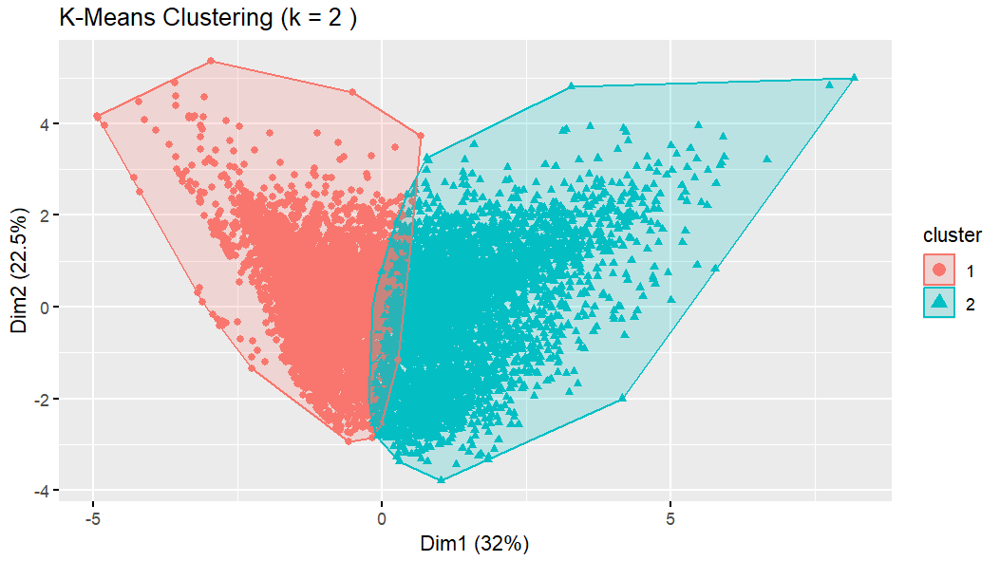
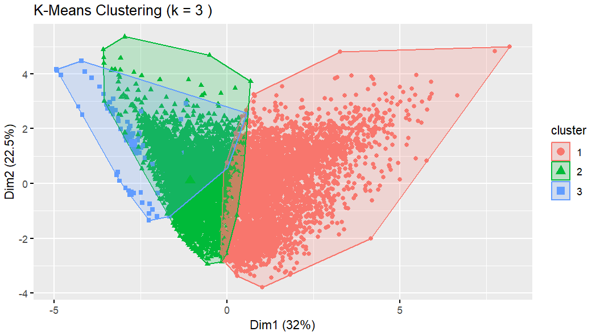
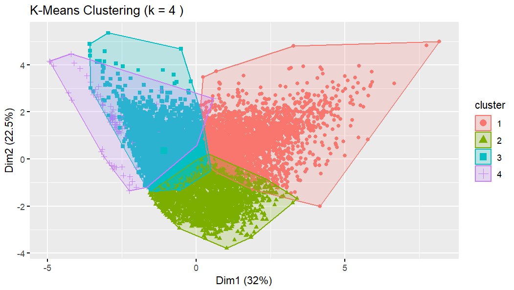
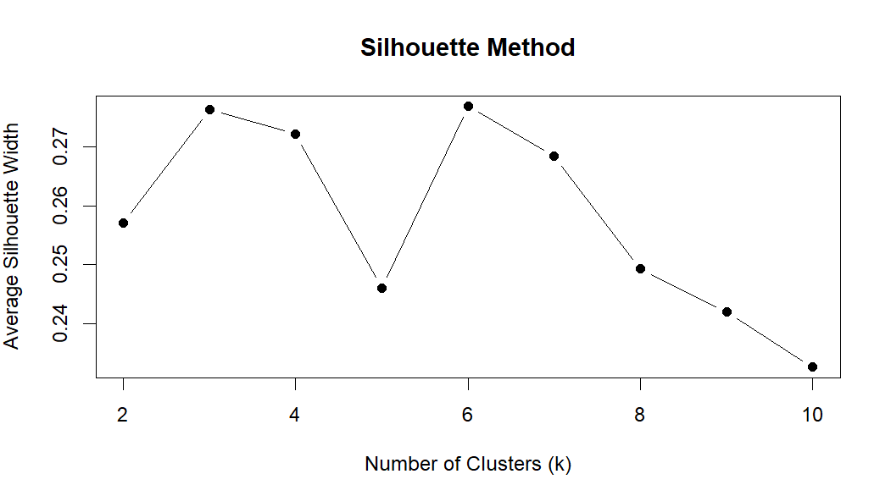
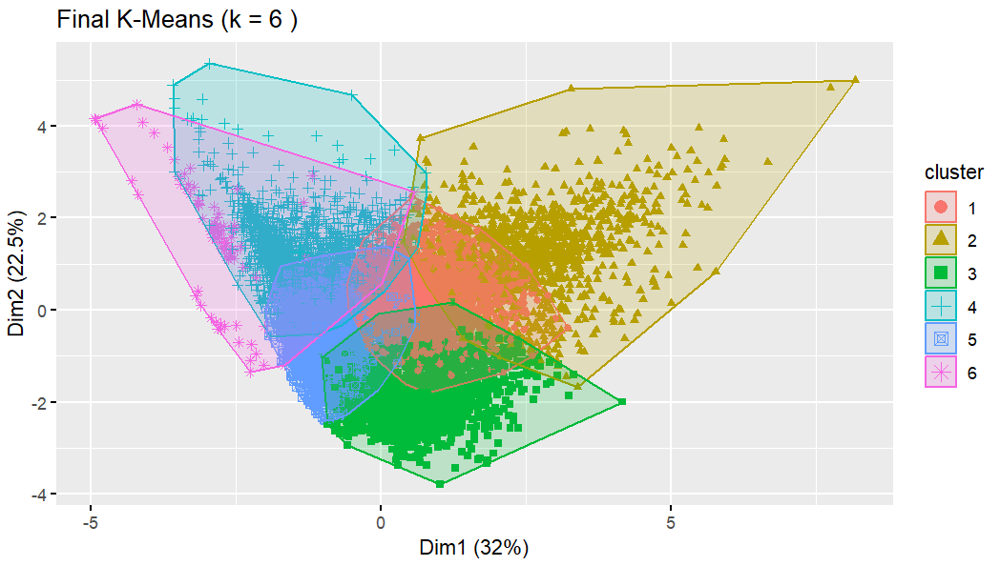
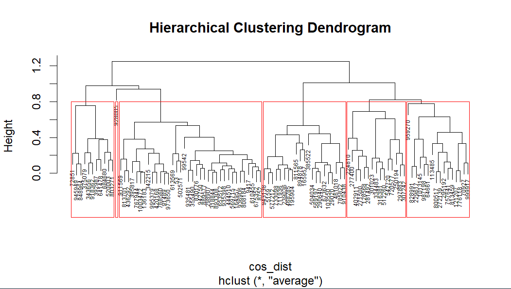

Clustering is an unsupervised learning method used to discover natural structure in unlabeled data, as shown in Fig. 1. Partitional clustering (such as k-means) directly partitions observations into k groups by minimizing within-cluster variance. Hierarchical clustering instead builds a tree of nested clusters, allowing the analyst to “cut” the dendrogram at different heights to obtain different values of k.
In this project, clustering is used to uncover patterns in biomedical research article metadata. K-means uses Euclidean distance on standardized numeric features (Fig. 2), while hierarchical clustering uses cosine distance with average linkage, which is well-suited for high-dimensional text-derived features.

Clustering requires numeric, unlabeled data. All non-numeric variables (e.g., titles, authors) were quantified and standardized. This ensures that no single variable dominates the distance calculations.
Below is a sample of the dataset used for clustering:

Dataset link:
Both k-means and hierarchical clustering were implemented in R. K-means was run for multiple values of k, and hierarchical clustering used cosine distance with average linkage.





The silhouette method evaluates how well each point fits within its assigned cluster. The highest silhouette score occurred at k = 6, indicating that this value provides the best balance between compactness and separation.

The dendrogram shows roughly six major branches, suggesting that k = 6 is a natural cut point. This aligns with the silhouette analysis and the k-means results.
Overall, both k-means and hierarchical clustering independently support k = 6 as the optimal number of clusters for this dataset.
Clustering revealed meaningful structure in the biomedical research dataset. Across all methods (k-means, hierarchical clustering, and silhouette analysis), k = 6 consistently emerged as the most stable and interpretable solution.
These clusters likely correspond to distinct research article profiles, such as differences in topic intensity, citation behavior, or methodological complexity, and therefore will provide a foundation for downstream analyses.